Benutzerhandbuch | pobvol Service Solution | Power App pssService Phone | Servicevorgänge
Benutzerhandbuch
pobvol Service Solution
Power App pssService Phone
Stand: 9'25 Deutsch /
English
Servicevorgänge
Für jeden Servicevorgang wird ein Servicebericht erstellt. So werden alle Serviceaktivitäten des Teams dokumentiert. Das Protokollieren der Servicevorgänge und der Ergebnisse liefert die Daten für die Serviceberichte.
Benutzer der Gruppe "Techniker" nutzen die Power App pssService Phone auf Smartphones und iPhones, um Servicevorgänge zu erfassen oder anzupassen. Nur Techniker können Servicevorgänge anlegen und bearbeiten.
Gespeichert werden die Daten in den SharePoint-Listen (SP-Listen) "Servicevorgaenge", "ServicevorgaengeP" und "ServiceauftraegeE".
Wenn QR-Codes oder NFC-Tags erstellt und an dem Kundeninventar angebracht wurden, können Ihre Techniker mit dem Smartphone/iPhone einen eindeutigen Code scannen und damit einen Servicevorgang anlegen.
Das Erstellen der QR-Codes oder NFC-Tags ist nicht Teil der Softwarelösung pobvol Service Solution!
StartScreen der App pssService Phone
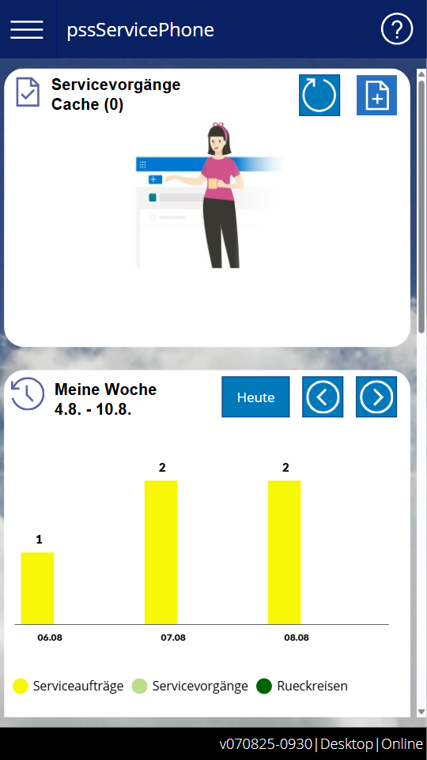
Neuer Servicevorgang: Mit diesem Icon wird die Erfassung eines Servicevorgangs gestartet.
Auf das Icon "Neuer Servicevorgang" klicken. Der Screen "Neuer Servicevorgang" wird eingeblendet.
Screen: Neuer Servicevorgang
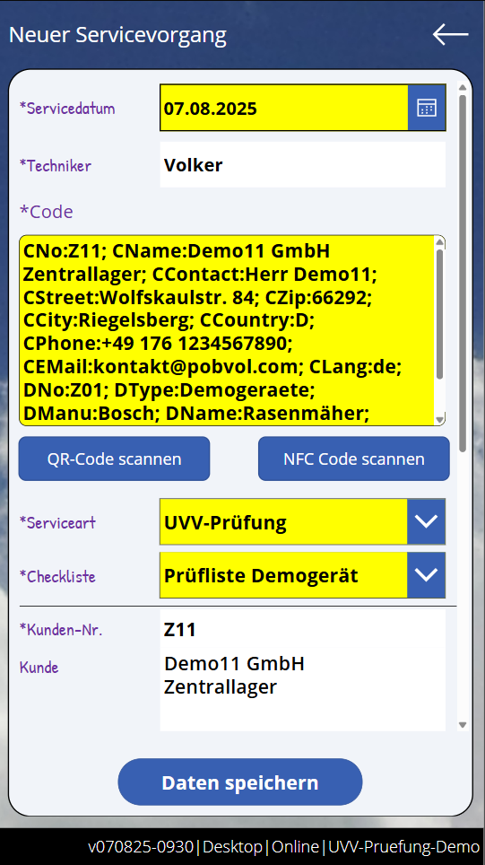
Servicedatum: ist vorbelegt, kann aber geändert werden.
Techniker: ist vorbelegt, Änderungen sind nicht möglich.
Code: Der Code des Kundeninventars kann über die Tastatur eingegeben oder gescannt werden.
Mit einem Klick auf dieses Icon, kann der QR-Code gescannt werden.
Mit einem Klick auf dieses Icon, kann der NFC-Code gescannt werden.
Serviceart: ist vorbelegt, kann aber geändert werden, wenn dem Gerätetyp weitere Servicearten zugeordnet wurden. Welche Servicearten verfügbar sind, hat Ihr Admin bei der Installation der Lösung festgelegt.
Checkliste: ist vorbelegt, kann aber geändert werden, wenn dem Gerätetyp und der gewählten Serviceart weitere Checklisten zugeordnet wurden. Welche Checklisten verfügbar sind, hat Ihr Admin bei der Installation der Lösung festgelegt.
"Daten speichern" wählen.
Wurde bereits ein Servicevorgang angelegt, wird der Vorgang geladen und im Screen "Servicevorgang" eingeblendet. Das hilft bei der Stellvertretung! Techniker können so jeden Servicevorgang übernehmen und weiterbearbeiten.
Ist das Smartphone/iPhone Online, wird der Vorgang in den SharePoint-Listen gespeichert. Wurde die App mittels Power Apps Mobile gestartet, wird der Vorgang zusätzlich auf dem Gerät gespeichert und steht beim nächsten Start der App zur Verfügung, auch wenn das Gerät dann Offline sein sollte.
Der Vorgang wird im Screen "Servicevorgang" angezeigt. Die Erfassung des Servicevorgangs kann fortgesetzt oder vorübergehend unterbrochen und später wieder fortgesetzt werden.
Einen Servicevorgang aus einem Auftrag / einer Erinnerung anlegen
Anstatt QR- oder NFC-Codes von Kundengeräten zu scannen, kann die Erfassung eines Servicevorgangs auch aus einem Serviceauftrag / einer Erinnerung gestartet werden. Dann sind die Kunden- und Inventardaten ebenfalls vorbelegt und das Scannen des Kundengeräts entfällt.
Auf dem Startbildschirm der App pssService Phone über das Chart "Meine Woche" oder das Chart "Serviceaufträge (Team)" einen Auftrag / eine Erinnerung aufrufen und auf ein Inventar klicken.
Wurde bereits ein Servicevorgang angelegt, wird der Vorgang geladen und im Screen "Servicevorgang" eingeblendet. Ansonsten wird der Screen "Neuer Servicevorgang" eingeblendet. Das hilft bei der Stellvertretung! Techniker können so jeden Servicevorgang übernehmen und weiterbearbeiten.
Screen: Neuer Servicevorgang
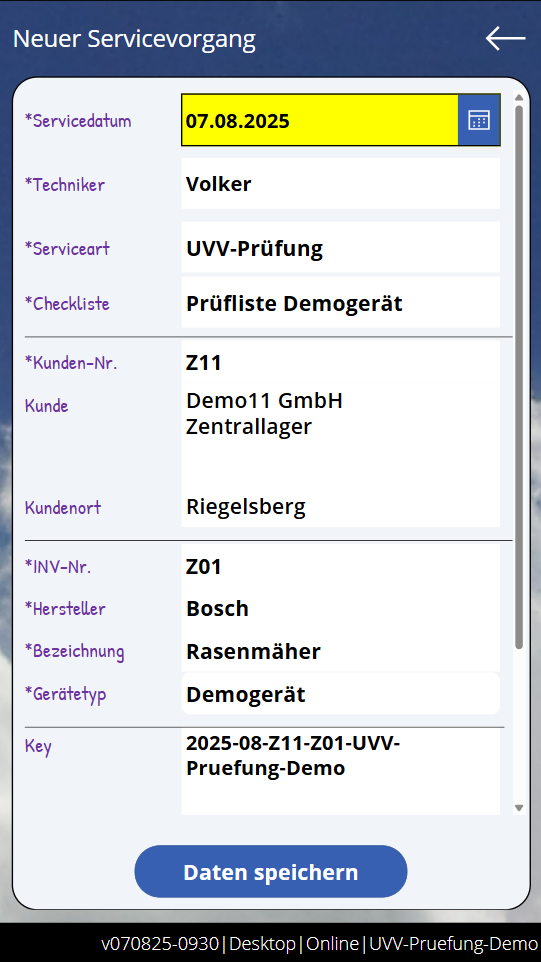
Alle Daten sind vorbelegt, einzig das Servicedatum kann geändert werden.
"Daten speichern" wählen.
Ist das Smartphone/iPhone Online, wird der Vorgang in den SharePoint-Listen gespeichert. Wurde die App mittels Power Apps Mobile gestartet, wird der Vorgang zusätzlich auf dem Gerät gespeichert und steht beim nächsten Start der App zur Verfügung, auch wenn das Gerät dann Offline sein sollte.
Der Vorgang wird im Screen "Servicevorgang" angezeigt. Die Erfassung des Servicevorgangs kann fortgesetzt oder vorübergehend unterbrochen und später wieder fortgesetzt werden.
Vorgangsdaten zeigt die App pssService Phone auf dem Screen "Servicevorgang" an.
Container: Vorgangsdaten
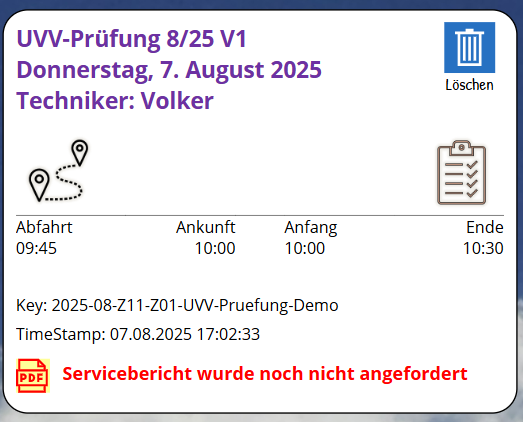
Löschen: Mit einem Klick auf dieses Icon kann der Vorgang gelöscht werden. Das Icon ist nur für Benutzer sichtbar, die zur App-Benutzergruppe "Techniker" gehören. Das Icon ist nicht sichtbar, wenn bereits ein Bericht angefordert und genehmigt wurde.
Kundendaten zeigt die App pssService Phone auf dem Screen "Servicevorgang" in dem Container "Auftraggeber" an.
Container: Auftraggeber
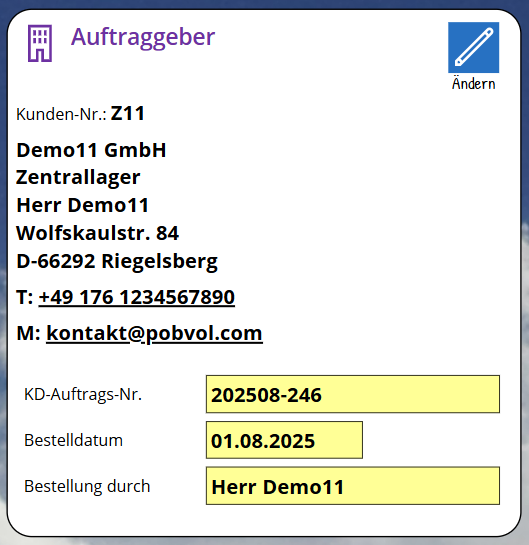
Ändern: Mit einem Klick auf dieses Icon kann der Bearbeitungsmodus aufgerufen werden. Das Icon ist nur für Benutzer sichtbar, die zur App-Benutzergruppe "Techniker" gehören. Das Icon ist nicht sichtbar, wenn bereits ein Bericht angefordert und genehmigt wurde.
Im Bearbeitungsmodus können Techniker die Kundenauftragsdaten (Kundenauftragsnummer, Bestelldatum, Bestellung durch) ändern.
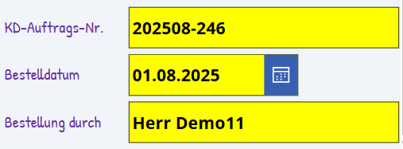
Inventardaten zeigt die App pssService Phone auf dem Screen "Servicevorgang" in dem Container "Kundeninventar" an.
Container: Kundeninventar
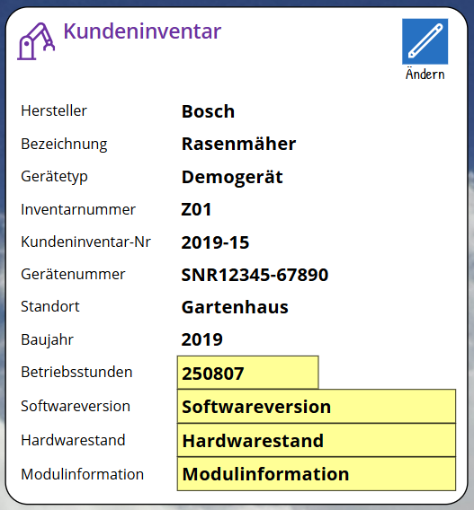
Ändern: Mit einem Klick auf dieses Icon kann der Bearbeitungsmodus aufgerufen werden. Das Icon ist nur für Benutzer sichtbar, die zur App-Benutzergruppe "Techniker" gehören. Das Icon ist nicht sichtbar, wenn bereits ein Bericht angefordert und genehmigt wurde.
Im Bearbeitungsmodus können Techniker die Inventardaten ändern. Welche Daten zu einem Kundeninventar erfasst werden können, hat Ihr Admin bei der Installation der Lösung pro Gerätetyp festgelegt.
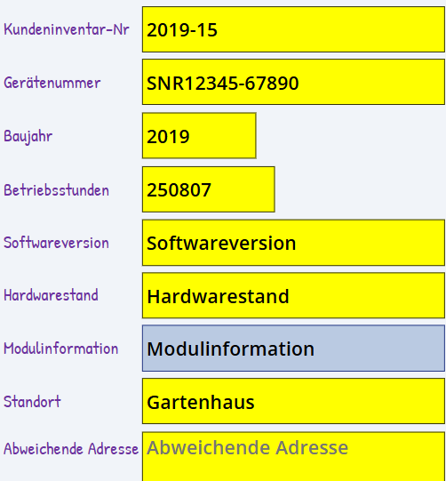
Eine Checkliste ist Hauptbestandteil der Servicevorgänge. Die Checkliste ist abhängig vom Gerätetyp und kann bis zu 25 Checkpunkte umfassen. Welche Checkpunkte gelistet werden, hat Ihr Admin bei der Installation festgelegt.
Container: Checkliste
Alle OK: Mit einem Klick auf dieses Icon werden alle Einträge, für die noch kein Status erfasst wurde, auf den Default-Statuswert gesetzt (= erster Eintrag der Statusauswahl). Welche Statuswerte pro Checkpunkt verfügbar sind, hat Ihr Admin bei der Installation festgelegt. Tipp: Alle OK wählen, danach die Einträge bearbeiten, die nicht Ok waren und die Ergebnisse anpassen.
Checkpunkt bearbeiten: Solange kein Bericht angefordert und genehmigt wurde, können Techniker mit einem Klick auf einen Checkpunkt in den Bearbeitungsmodus wechseln und die Daten ändern.
Status festlegen. Welcher Status zu einem Checkpunkt erfasst werden kann, hat Ihr Admin bei der Installation der Lösung festgelegt.
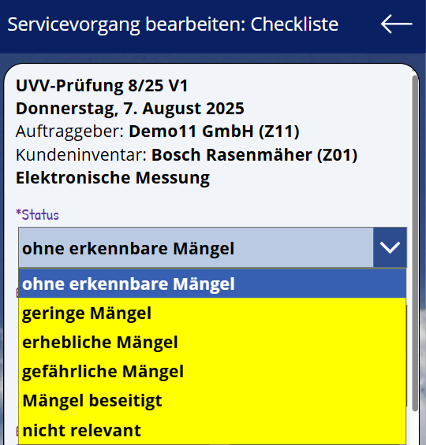
Bemerkungen erfassen. Ob Bemerkungen erfasst werden müssen, ist vom Status abhängig. Wenn Bemerkungen erfasst werden, bitte auf die Kundensprache achten! Der Kunde soll die Bemerkungen ja auch lesen und verstehen.
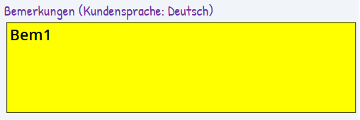
Eventuell ein Bild hochladen.
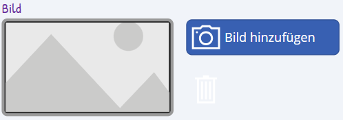
Wenn von Ihrem Admin Zusatzfelder zu einem Checkpunkt konfiguriert wurden, dann müssen Ihre Techniker die Information auch erfassen (Pflichtfelder). Bis zu 5 Felder vom Typ Texteingabe, Nummerneingabe, Optionsfeld und Dropdown können pro Checkpunkt konfiguriert werden. Sie können auch die Werte aus dem letzten Vorgang übernehmen.
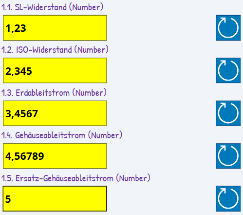
Zum Schluss "Daten speichern" wählen. Die erfassten Daten werden in der Checkliste angezeigt.
Ersatzteile, Zubehör und Einmalartikel zeigt die App pssService Phone auf dem Screen "Servicevorgng" in dem Container "Ersatzteile, Zubehör und Einmalartikel" an.
Container: Ersatzteile, Zubehör und Einmalartikel
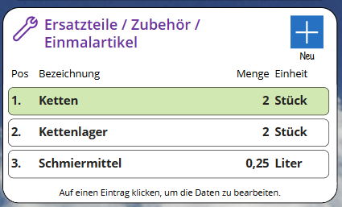
Neu: Mit diesem Icon kann ein Eintrag zu der Liste hinzugefügt werden. Der Screen "Neues Ersatzteil / Zubehör / Einmalartiklel" wird eingeblendet.
Eintrag bearbeiten: Solange kein Bericht angefordert und genehmigt wurde, können Techniker mit einem Klick auf einen Eintrag in den Bearbeitungsmodus wechseln und die Daten ändern.
Details zur Anreise zeigt die App pssService Phone auf dem Screen "Servicevorgang" in dem Container "Fahrtbericht" an.
Container: Fahrtbericht
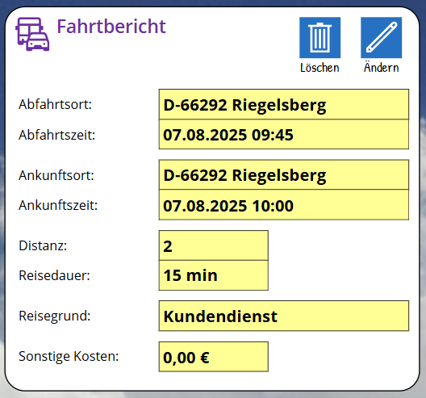
Löschen: Mit einem Klick auf dieses Icon kann der Fahrtbericht gelöscht werden.
Ändern: Mit einem Klick auf dieses Icon kann der Bearbeitungsmodus aufgerufen werden. Das Icon ist nur für Benutzer sichtbar, die zur App-Benutzergruppe "Techniker" gehören. Der Fahrtbericht kann auch dann angepasst werden, wenn ein Bericht angefordert und genehmigt wurde.
Die Arbeitszeit zeigt die App pssService Phone auf dem Screen "Servicevorgang" in dem Container "Dauer des Servicevorgangs" an.
Container: Dauer des Servicevorgangs
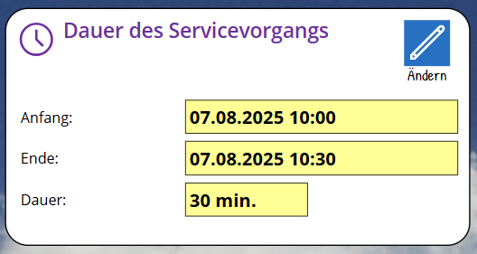
Ändern: Mit einem Klick auf dieses Icon kann der Bearbeitungsmodus aufgerufen werden. Das Icon ist nur für Benutzer sichtbar, die zur App-Benutzergruppe "Techniker" gehören. Das Icon ist nicht sichtbar, wenn bereits ein Bericht angefordert und genehmigt wurde.
Die abschliessende Bewertung zeigt den Gesamtstatus (Status, Mängelklasse, Plakette) aus den Eingaben in der Checkliste. Diese zeigt die App pssService Phone auf dem Screen "Servicevorgang" in dem Container "Abschliessende Bewertung" an.
Container: Abschliessende Bewertung
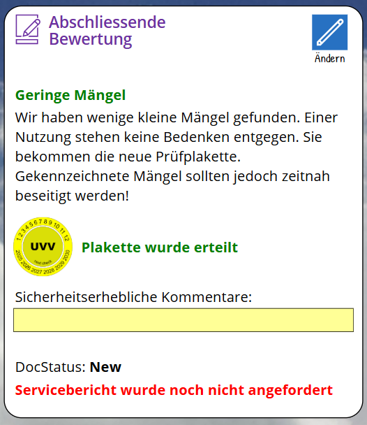
Ändern: Mit einem Klick auf dieses Icon kann der Bearbeitungsmodus aufgerufen werden. Das Icon ist nur für Benutzer sichtbar, die zur App-Benutzergruppe "Techniker" gehören. Das Icon ist nicht sichtbar, wenn bereits ein Bericht angefordert und genehmigt wurde.
Im Bearbeitungsmodus können Techniker sicherheitsrelevante Kommentare erfassen und den Servicebericht anfordern. Wird der Servicebericht angefordert, werden die finalen Daten des Servicevorgangs in den SP-Listen gespeichert und der Power Automate Flow getriggert.
Der StartScreen der App pssService Phone zeigt in dem Container "Servicevorgänge (Cache)" die Servicevorgänge des Technikers an, für die noch kein Bericht angefordert wurde.
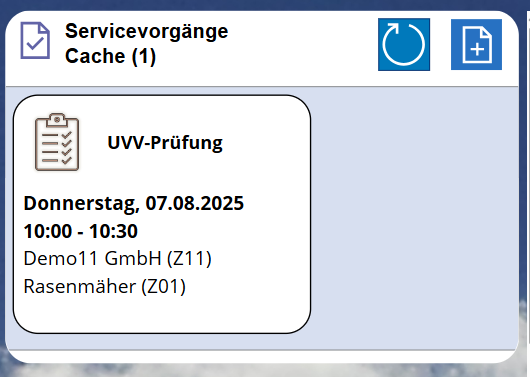
Ein Klick auf einen Vorgang öffnet den Screen "Servicevorgang" und zeigt den gewählten Vorgang an.
Bitte beachten: Nur die Power Apps Mobile App ist fähig, Daten auf dem Smartphone/iPhone zu speichern und wieder zu lesen. Die Servicevorgänge stehen dann auch nach einem Neustart der App pssService Phone wieder zur Verfügung. Die Teams App und die Browser Edge und Chrome sind dazu nicht fähig! Um diese Limitierung zu umgehen, wird die App pssService Phone versuchen, die Daten der Servicevorgänge Online im SharePoint zu speichern und bei Neustart vom SharePoint zu lesen. Das klappt natürlich nur, wenn das Gerät auch Online ist.
Der StartScreen der App pssService Phone zeigt in einem Balkendiagramm für den ausgewählten Zeitraum, pro Tag
die Anzahl der offenen Serviceaufträge und Erinnerungen des Technikers,
die Anzahl der vom Techniker erfassten Servicevorgänge und
die Anzahl der vom Techniker erfassten Rückreisen.
Der ausgewählte Zeitraum umfasst immer eine Woche (erster Tag der Woche ist immer Montag).
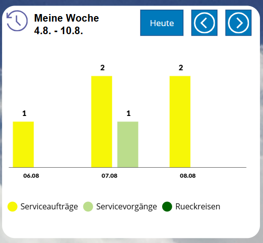
Mit einem Klick auf dieses Icon, wird der Zeitraum (Mo-So) auf die aktuelle Woche zurückgesetzt.
Zurück: Mit einem Klick auf dieses Icon, wird der Zeitraum (Mo-So) um eine Woche verringert.
Vor: Mit einem Klick auf dieses Icon, wird der Zeitraum (Mo-So) um eine Woche erhöht.
Ein Klick auf einen Balken im Diagramm öffnet den Screen "Mein Tag" und blendet die offenen Termine, die erfassten Vorgänge sowie die An- und Rückreisen für den ausgewählten Tag ein.
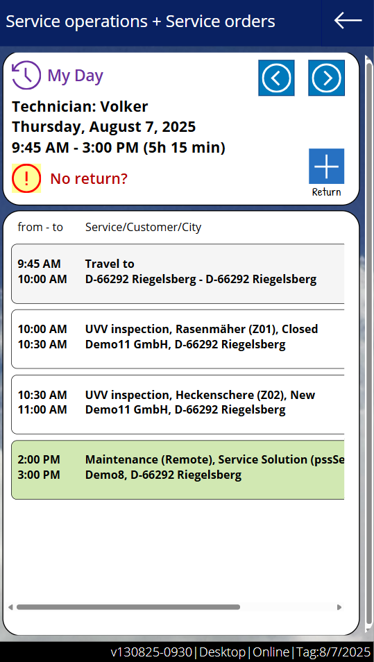
Zurück: Mit einem Klick auf dieses Icon, wird der Vortag eingeblendet.
Vor: Mit einem Klick auf dieses Icon, wird der nächste Tag eingeblendet.
Rückreise: Mit diesem Icon kann eine Rückreise erfasst werden.
Mit einem Klick auf einen Auftrag / eine Erinnerung wird der Screen "Serviceauftrag" eingeblendet.
Mit einem Klick auf eine Anreise wird der Screen "Servicevorgang" eingeblendet.
Mit einem Klick auf einen Vorgang wird der Screen "Servicevorgang" eingeblendet.
Mit einem Klick auf eine Rückreise wird der Screen "Rückreise bearbeiten" eingeblendet.
Screen: Rückreise erfassen
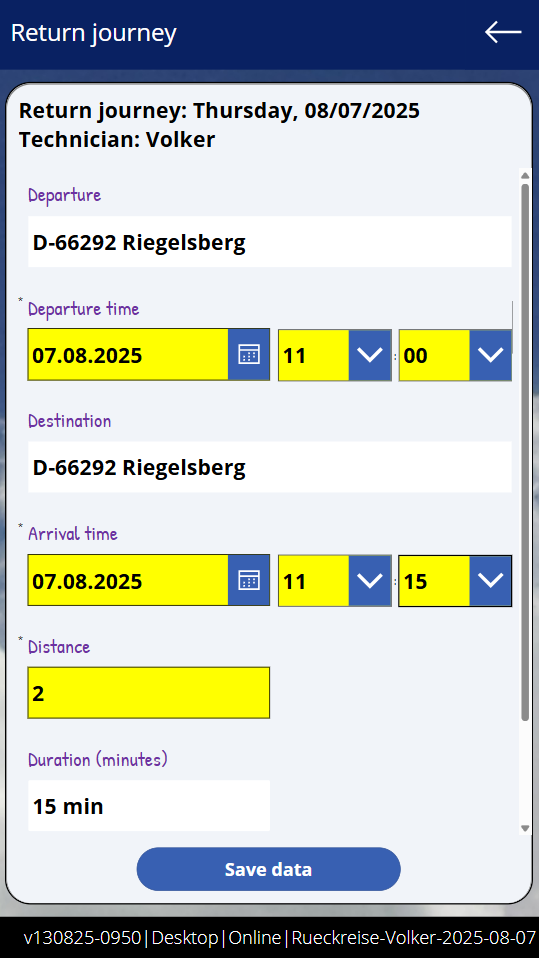
Die Rückreise wird nach dem Speichern in der Übersicht angezeigt.